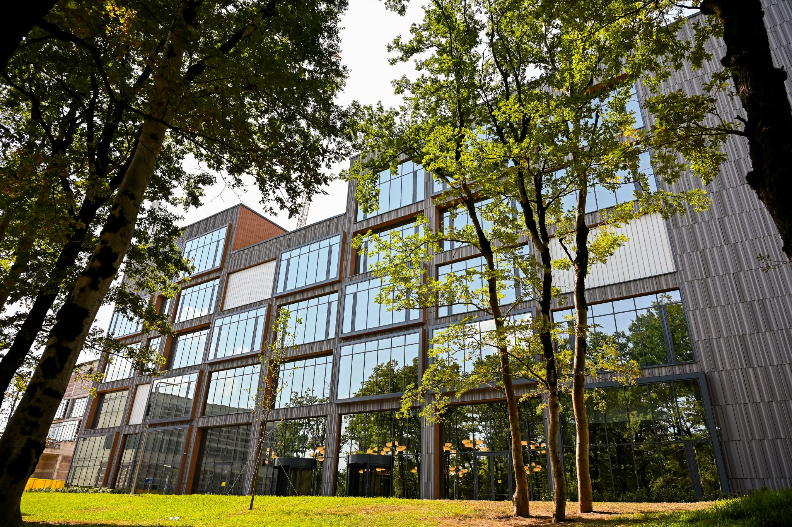
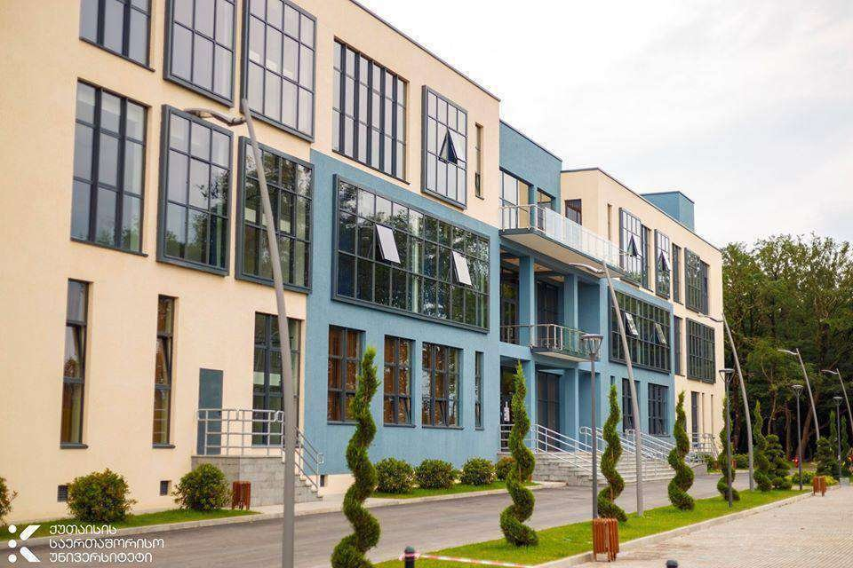

Academic Building A
Bigger Cafeteria than in K, you can also dine outside, Useful for seminars and general faculty life. One of the best things here is that empty seminar rooms can be used for focused study.

Academic Building K
Home to the library and seminar rooms. The library is best for quiet study, while empty seminar rooms are excellent if you want to use Screen for group work or for individual study.
Lecture Auditorium
Large auditorium for lectures, presentations, and academic events. Equipment: projector, large screen, sound system, tiered seating, and podium.
Interesting fact: usually hosts the biggest classes and guest lectures, making it one of the most important academic spaces on campus.
Seminar Room
Teaching, presentations, and study sessions.
Equipment: projector (in A), screen whiteboard(in K), tables, chairs, whiteboard (in K), wall whiteboard (in A), chairs and tables.
Interesting fact: this is the most flexible study room on campus when empty.
Library
Quiet study, reading, and doing homework.
Equipment: books, desks, computers, printing.
Interesting fact: here you can find physical copies of some of the books you used in your subjects. Best for focused, quiet work.
Cafeteria
Meals and breaks between classes, a great spot to meet friends, relax, or to quickly grab food and drink.
Equipment: seating areas, food service counters, refrigerators and microwaves.
Interesting fact: easy to use when moving between lectures. It's not unusual to study here.
Lounge
A space for relaxing, meeting friends and studying between classes.
Equipment: seating, small tables and sometimes vending machines.
Interesting fact: one of the best places on campus for taking a break without leaving the university building.
Park between A and K
Relaxing, walking.
Equipment: trees, paths, benches, and open outdoor space. Hours: open outdoors during the day and easy to use between buildings.
Interesting fact: best place to walk with friends or clear your mind at night.
Stadiums
Sport and campus events.
Equipment: fields, seating, and sports facilities. Hours: depend on events and training schedules.
Interesting fact: you can sometimes watch university teams play football.
Fire escape
Emergency evacuation in every building.
Equipment: marked exits, stairs, and escape routes.
Interesting fact: every building has one, so this should be one of the first things students notice.